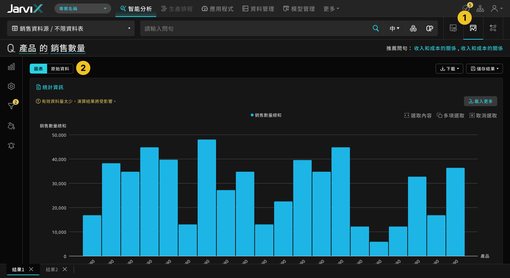

產品名稱：JarviX
擔任角色：UI / UX Designer
負責內容：使用情境定義、資訊結構統整、操作流程規劃、UI 設計
1. 概要說明
在用Excel、或其他 BI 軟體時要經過許多步驟的操作，才能夠將資料轉畫成圖表呈現，但在JarviX上僅需要輸入一段句子，即可出現圖表，大大簡化資料變成圖表的步驟過程。
目前的頁面流程，起始畫面主要先以資料總覽頁面作為開始，問句輸入後將進入到下一個頁面呈現問句結果，輸入下一個問句後，則再顯示新的結果。
資料總覽 - 起始畫面 (舊)
問句結果 (舊)
簡易功能說明
資料總覽 - 開啟進階設定 (舊)
- 透過進階設定的「欄位列表」功能，可選擇需要的欄位。
- 透過進階設定的「篩選條件」功能，可限制資料範圍。
- 「原始資料表」內容呈現，可以不受「欄位列表」和「篩選條件」功能的影響，呈現原始的資料。
資料總覽 - 指定資料表 (舊)
- 可指定特定資料表進行問句分析。
使用流程狀況
- 資料總覽與分析結果頁面為階層關係。
- 理想上使用者可以透過圖表結果，就能不斷地問問題下去。
- 事實上使用者會頻繁回到上一頁資料總覽，再問下一句的問題。
2. 定義問題
- 多數使用者對資料內容並不熟悉。
- 問句結果將會換頁取代資料總覽的頁面，接下來欲查看或對照資料總覽的內容時，則需中斷分析流程返回前一頁的資料總覽查看。
- 原始資料內容因不受篩選條件、欄位設定影響，對使用者得泛用性較低，仍需要倚靠資料總覽。
- 最常使用的欄位設定、篩選條件設定這兩項功能，被收納在進階設定當中，但進階設定在 UI 呈現意圖不明顯，在沒有人的引導下使用者無法曉得。
- 使用「欄位設定」功能時，使用者需要透過對照欄位資料來辨識欄位，因此視覺需要兩個功能區塊來回瀏覽對照。
- 若想指定資料表問問題時，必須透過選單選取，當資料源、資料表項目一多時，尋找該資料表的步驟則變為繁瑣。
- 透過問句即產生圖表，使用者無法知道如何被組成及演算出來，因此對真實性保有懷疑的想法。
- 必須透過問句才能異動圖表結果，但有些時候問句的組成非常複雜，不容易統整成一段問句。
設計挑戰
- 新舊功能整併與頁面的資訊架構需要重新規劃。
- 原功能需要在同樣使用目的前提下，進行操作方式調整。
- 聯繫功能之間的交互性。
3. 設計目標
(1) 提高易用性
- 提升不同功能頁面之間的使用切換彈性。
- 欄位設定過程可以容易瀏覽對照資料。
- 給使用者自主選擇要瀏覽的資料表狀態，例如：原始資料內容、篩選設定後的資料內容。
(2) 增加信任度
- 讓使用者明白從資料到圖表的處理過程。
- 顯示圖表結果的原始資料。
4. 設計結果
 資料總覽 (新)
資料總覽 (新)
細部說明
- 新增點擊資料表名稱前的 Icon 後，即完成指定資料表，讓同資料源之間的資料表切換更迅速。
- 欄位設定功能不再隱藏，並且可直接在資料表上進行選取。
- 透過顯示設定可讓使用者在任何時候決定要看什麼樣貌的資料，不需再額外區分兩種資料總覽畫面。
 問句結果 - 圖表 (新)
問句結果 - 原始資料 (新)
細部說明
- 原「資料總覽」與「問句結果」的上下頁關係，改為同一個頁面的平行內容，並將新功能「分析流程」一起加入，透過問句輸入框右側 Tab，可以在不中斷分析過程的情況下彈性切換。
- 「問句結果」將呈現不同模式，使用者可以自由切換查看圖表或原始資料，不在需要開啟兩種不同的資料內容。
 資訊架構
資訊架構
分析流程 (新功能)
分析流程 - 節點邊編輯 (新功能)
細部說明
- 顯示「分析流程」，讓問句產出的結果可以透明化，藉此增加使用者對於產品的信心度。
- 透過每個節點帶有的設定項目，可進行微調設定，不需再另問新問句。
5. 使用者回饋

我常會指定特定資料表來進行分析與測試，且會頻繁切換，但我的資料有非常的多項，以前需要透過很長的滾動或是搜尋功能才能尋找到，現在可以直接在瀏覽資料的時候，就能將該資料表指定起來，這對我來說實在非常方便。

我非常倚賴資料總覽來了解資料，也經常控制資料表的內容來進行分析，資料總覽與問句結果的前後頁關係，使得問句結果常常會被清空，很干擾我分析過程，現在資料總覽和問句結果可以彈性切換顯示，不僅問句結果不會被清空，還可以自主控制資料內容的呈現方式，讓我感到非常方便。